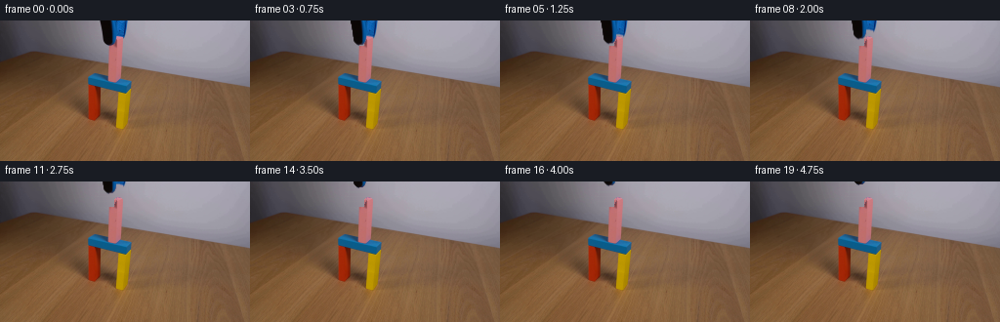
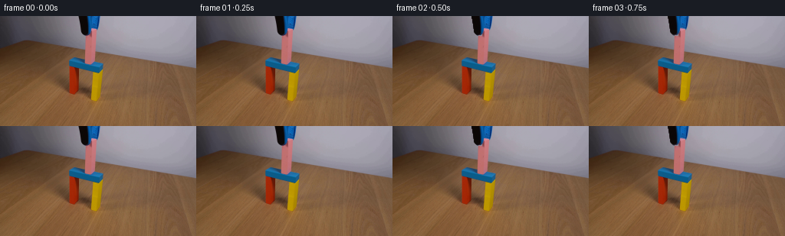
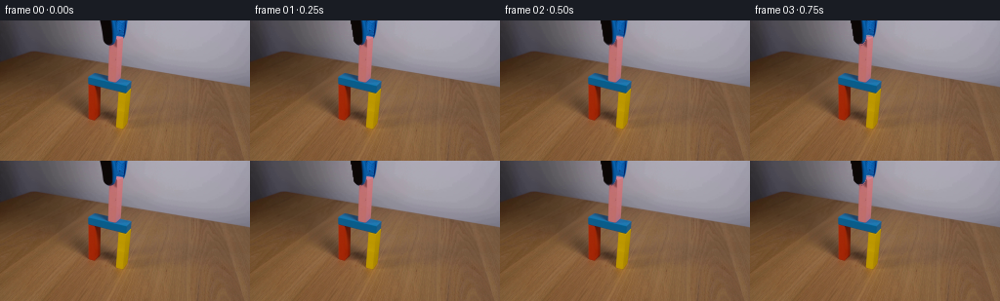
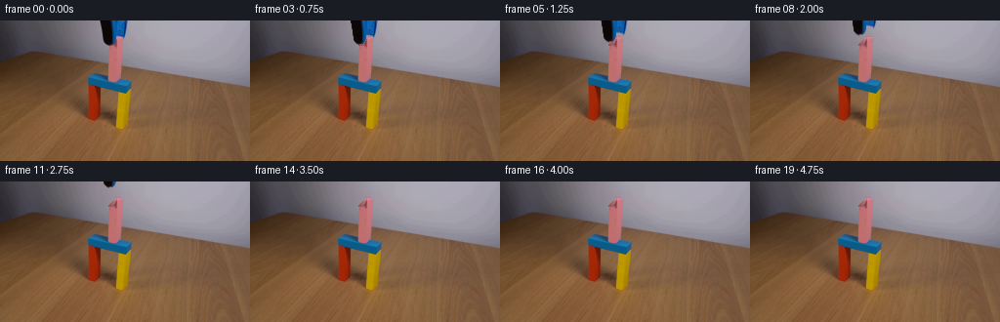
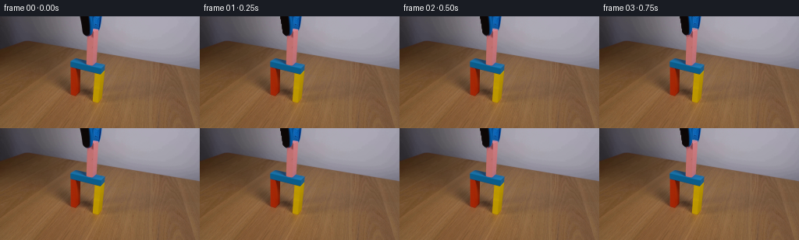
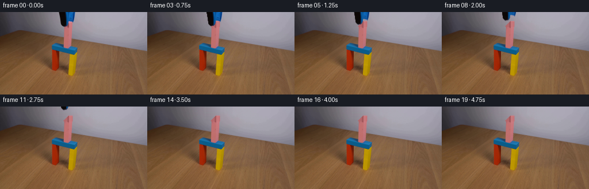
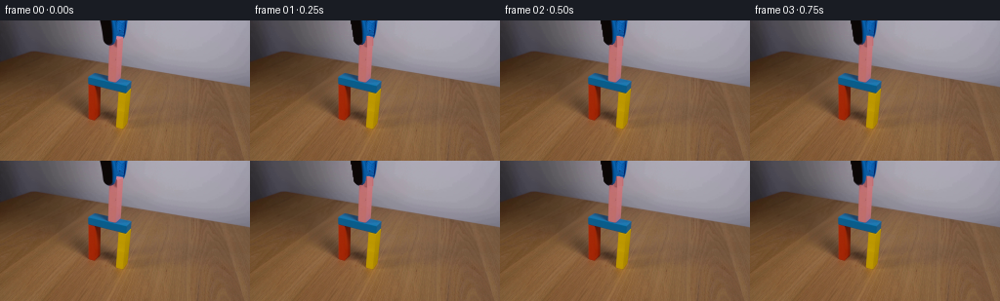

CODING AGENTS AS PIXEL WORLD MODELS
traex/DeepSeek-V4.1-Flash · 0174
点击播放 · 原生 RGB 像素
逐轮保存的候选
回放视频、检查图与代码变化。
每份候选均可单独播放。实际图片检查记录在下方工具轨迹中。
候选 01播放与检查图
点击播放 · 原生 RGB 像素


展开代码变化
--- 上一保存版本
+++ 本次保存版本
@@ -0,0 +1,150 @@
+from pathlib import Path
+
+import cv2
+import numpy as np
+from PIL import Image
+
+import artifact_io
+
+
+H, W = 144, 256
+FRAMES = 20
+
+
+def _row_interpolate_wall(frame: np.ndarray) -> np.ndarray:
+ """Fill the narrow wall strip hidden by the retracted tool."""
+ out = frame.astype(np.float32).copy()
+ for y in range(26):
+ left = np.median(frame[y, 98:102], axis=0)
+ right = np.median(frame[y, 131:135], axis=0)
+ for x in range(102, 131):
+ t = (x - 102) / (130 - 102)
+ out[y, x] = (1.0 - t) * left + t * right
+ return out
+
+
+def _pink_mask(frame: np.ndarray) -> np.ndarray:
+ r = frame[:, :, 0].astype(np.int16)
+ g = frame[:, :, 1].astype(np.int16)
+ b = frame[:, :, 2].astype(np.int16)
+ return (r > 105) & (r > g + 15) & (b > g) & (r < 235)
+
+
+def _block_profile(frame: np.ndarray) -> dict[int, np.ndarray]:
+ pink = _pink_mask(frame)
+ profile: dict[int, np.ndarray] = {}
+ for x in range(117, 126):
+ ys = np.arange(27, 46)
+ samples = frame[ys, x][pink[ys, x]]
+ profile[x] = np.median(samples, axis=0) if len(samples) else np.array([192, 113, 120])
+
+ # Repair any weak side columns from their nearest interior neighbor.
+ for x in range(117, 126):
+ if np.linalg.norm(profile[x] - np.array([192, 113, 120])) > 65:
+ neighbor = profile[x + 1] if x < 125 else profile[x - 1]
+ profile[x] = neighbor
+ return profile
+
+
+def _restore_block_top(plate: np.ndarray, source: np.ndarray) -> np.ndarray:
+ """Rebuild the few rows of pink block that the jaws covered."""
+ out = plate.copy()
+ profile = _block_profile(source)
+ pink = _pink_mask(source)
+
+ top_rows = {
+ 16: (119, 123),
+ 17: (118, 124),
+ 18: (117, 125),
+ 19: (117, 125),
+ 20: (117, 125),
+ 21: (117, 125),
+ 22: (117, 125),
+ 23: (117, 125),
+ 24: (117, 125),
+ 25: (117, 125),
+ }
+
+ model_mean = np.mean([profile[x] for x in range(118, 125)], axis=0)
+ for y, (x0, x1) in top_rows.items():
+ valid = [x for x in range(x0, x1 + 1) if pink[y, x]]
+ row_mean = np.mean(source[y, valid], axis=0) if valid else model_mean
+ gain = np.clip(row_mean / np.maximum(model_mean, 1.0), 0.78, 1.18)
+ bevel = 1.04 if y <= 18 else 1.0
+ for x in range(x0, x1 + 1):
+ if pink[y, x]:
+ out[y, x] = source[y, x]
+ else:
+ out[y, x] = np.clip(profile[x] * gain * bevel, 0, 255)
+
+ # A one-pixel contact bevel keeps the cap from looking pasted on.
+ for x in range(119, 124):
+ out[16, x] = 0.82 * out[16, x] + 0.18 * np.array([202, 128, 145])
+ return out
+
+
+def _clean_plate(frame: np.ndarray) -> np.ndarray:
+ plate = _row_interpolate_wall(frame)
+ plate = _restore_block_top(plate, frame)
+ return np.clip(plate, 0, 255).astype(np.uint8)
+
+
+def _tool_sprite(frame: np.ndarray) -> tuple[np.ndarray, np.ndarray]:
+ r = frame[:, :, 0].astype(np.int16)
+ g = frame[:, :, 1].astype(np.int16)
+ b = frame[:, :, 2].astype(np.int16)
+ yy, xx = np.indices((H, W))
+
+ region = (yy <= 26) & (xx >= 100) & (xx <= 132)
+ blue = (b > r + 8) & (b > g - 6) & (b > 35)
+ dark = np.max(frame, axis=2) < 62
+ pink = _pink_mask(frame)
+ core = region & (blue | dark) & ~pink
+
+ # Keep the block's central gap clear while retaining the two jaw tips.
+ alpha = cv2.GaussianBlur(core.astype(np.float32), (3, 3), 0.42)
+ alpha[~region] = 0.0
+ color = frame.astype(np.float32)
+ return color, alpha
+
+
+def _smoothstep(x: float) -> float:
+ x = float(np.clip(x, 0.0, 1.0))
+ return x * x * x * (x * (x * 6.0 - 15.0) + 10.0)
+
+
+def _composite_tool(base: np.ndarray, color: np.ndarray, alpha: np.ndarray, dy: float) -> np.ndarray:
+ matrix = np.array([[1.0, 0.0, 0.0], [0.0, 1.0, dy]], dtype=np.float32)
+ warped_alpha = cv2.warpAffine(
+ alpha, matrix, (W, H), flags=cv2.INTER_LINEAR, borderMode=cv2.BORDER_CONSTANT
+ )
+ premultiplied = color * alpha[:, :, None]
+ warped_color = cv2.warpAffine(
+ premultiplied, matrix, (W, H), flags=cv2.INTER_LINEAR, borderMode=cv2.BORDER_CONSTANT
+ )
+ result = warped_color + base.astype(np.float32) * (1.0 - warped_alpha[:, :, None])
+ return np.clip(result, 0, 255).astype(np.uint8)
+
+
+def generate(case_dir: Path) -> np.ndarray:
+ source = np.asarray(Image.open(case_dir / "first_frame.png").convert("RGB"), dtype=np.uint8)
+ assert source.shape == (H, W, 3)
+
+ plate = _clean_plate(source)
+ tool_color, tool_alpha = _tool_sprite(source)
+ frames = np.empty((FRAMES, H, W, 3), dtype=np.uint8)
+
+ # Frames 0 and 1 preserve the established contact instant; motion follows.
+ frames[0] = source
+ frames[1] = source
+ for i in range(2, FRAMES):
+ progress = (i - 1) / (FRAMES - 2)
+ dy = -22.0 * _smoothstep(progress)
+ frames[i] = _composite_tool(plate, tool_color, tool_alpha, dy)
+
+ return frames
+
+
+if __name__ == "__main__":
+ case_dir = Path(__file__).resolve().parent
+ artifact_io.save(generate(case_dir), case_dir)
候选 02播放与检查图
点击播放 · 原生 RGB 像素

展开代码变化
--- 上一保存版本
+++ 本次保存版本
@@ -33,15 +33,15 @@
def _block_profile(frame: np.ndarray) -> dict[int, np.ndarray]:
pink = _pink_mask(frame)
profile: dict[int, np.ndarray] = {}
- for x in range(117, 126):
+ for x in range(110, 127):
ys = np.arange(27, 46)
samples = frame[ys, x][pink[ys, x]]
profile[x] = np.median(samples, axis=0) if len(samples) else np.array([192, 113, 120])
# Repair any weak side columns from their nearest interior neighbor.
- for x in range(117, 126):
+ for x in range(110, 127):
if np.linalg.norm(profile[x] - np.array([192, 113, 120])) > 65:
- neighbor = profile[x + 1] if x < 125 else profile[x - 1]
+ neighbor = profile[x + 1] if x < 126 else profile[x - 1]
profile[x] = neighbor
return profile
@@ -52,17 +52,18 @@
profile = _block_profile(source)
pink = _pink_mask(source)
+ # The black jaw hides the receding top-left edge of the block.
top_rows = {
- 16: (119, 123),
- 17: (118, 124),
+ 16: (119, 125),
+ 17: (118, 125),
18: (117, 125),
- 19: (117, 125),
- 20: (117, 125),
- 21: (117, 125),
- 22: (117, 125),
- 23: (117, 125),
- 24: (117, 125),
- 25: (117, 125),
+ 19: (116, 125),
+ 20: (115, 125),
+ 21: (114, 125),
+ 22: (113, 125),
+ 23: (112, 125),
+ 24: (111, 125),
+ 25: (111, 125),
}
model_mean = np.mean([profile[x] for x in range(118, 125)], axis=0)
@@ -134,12 +135,10 @@
tool_color, tool_alpha = _tool_sprite(source)
frames = np.empty((FRAMES, H, W, 3), dtype=np.uint8)
- # Frames 0 and 1 preserve the established contact instant; motion follows.
frames[0] = source
- frames[1] = source
- for i in range(2, FRAMES):
- progress = (i - 1) / (FRAMES - 2)
- dy = -22.0 * _smoothstep(progress)
+ for i in range(1, FRAMES):
+ progress = i / (FRAMES - 1)
+ dy = -30.0 * _smoothstep(progress)
frames[i] = _composite_tool(plate, tool_color, tool_alpha, dy)
return frames
候选 03播放与检查图
点击播放 · 原生 RGB 像素


展开代码变化
--- 上一保存版本
+++ 本次保存版本
@@ -33,16 +33,20 @@
def _block_profile(frame: np.ndarray) -> dict[int, np.ndarray]:
pink = _pink_mask(frame)
profile: dict[int, np.ndarray] = {}
- for x in range(110, 127):
+ for x in range(117, 126):
ys = np.arange(27, 46)
samples = frame[ys, x][pink[ys, x]]
profile[x] = np.median(samples, axis=0) if len(samples) else np.array([192, 113, 120])
# Repair any weak side columns from their nearest interior neighbor.
- for x in range(110, 127):
+ for x in range(117, 126):
if np.linalg.norm(profile[x] - np.array([192, 113, 120])) > 65:
- neighbor = profile[x + 1] if x < 126 else profile[x - 1]
+ neighbor = profile[x + 1] if x < 125 else profile[x - 1]
profile[x] = neighbor
+ side = profile[117]
+ for x in range(110, 117):
+ shade = 0.83 + 0.025 * (x - 110)
+ profile[x] = side * shade
return profile
候选 04播放与检查图
点击播放 · 原生 RGB 像素

展开代码变化
--- 上一保存版本
+++ 本次保存版本
@@ -30,61 +30,42 @@
return (r > 105) & (r > g + 15) & (b > g) & (r < 235)
-def _block_profile(frame: np.ndarray) -> dict[int, np.ndarray]:
- pink = _pink_mask(frame)
- profile: dict[int, np.ndarray] = {}
- for x in range(117, 126):
- ys = np.arange(27, 46)
- samples = frame[ys, x][pink[ys, x]]
- profile[x] = np.median(samples, axis=0) if len(samples) else np.array([192, 113, 120])
-
- # Repair any weak side columns from their nearest interior neighbor.
- for x in range(117, 126):
- if np.linalg.norm(profile[x] - np.array([192, 113, 120])) > 65:
- neighbor = profile[x + 1] if x < 125 else profile[x - 1]
- profile[x] = neighbor
- side = profile[117]
- for x in range(110, 117):
- shade = 0.83 + 0.025 * (x - 110)
- profile[x] = side * shade
- return profile
-
-
def _restore_block_top(plate: np.ndarray, source: np.ndarray) -> np.ndarray:
"""Rebuild the few rows of pink block that the jaws covered."""
out = plate.copy()
- profile = _block_profile(source)
pink = _pink_mask(source)
- # The black jaw hides the receding top-left edge of the block.
- top_rows = {
- 16: (119, 125),
- 17: (118, 125),
- 18: (117, 125),
- 19: (116, 125),
- 20: (115, 125),
- 21: (114, 125),
- 22: (113, 125),
- 23: (112, 125),
- 24: (111, 125),
- 25: (111, 125),
- }
+ ys = np.arange(28, 44)
+ samples = source[ys[:, None], np.arange(120, 125)[None, :]]
+ front = np.median(samples.reshape(-1, 3), axis=0)
+ side = front * np.array([0.91, 0.87, 0.87])
+ groove = front * np.array([0.82, 0.75, 0.76])
+ edge = front * np.array([0.97, 0.94, 0.95])
- model_mean = np.mean([profile[x] for x in range(118, 125)], axis=0)
- for y, (x0, x1) in top_rows.items():
- valid = [x for x in range(x0, x1 + 1) if pink[y, x]]
- row_mean = np.mean(source[y, valid], axis=0) if valid else model_mean
- gain = np.clip(row_mean / np.maximum(model_mean, 1.0), 0.78, 1.18)
- bevel = 1.04 if y <= 18 else 1.0
- for x in range(x0, x1 + 1):
- if pink[y, x]:
- out[y, x] = source[y, x]
+ # The top-left edge recedes by one pixel per row; the right face is vertical.
+ left_edge = {16: 119, 17: 118, 18: 117, 19: 116, 20: 115, 21: 114,
+ 22: 113, 23: 112, 24: 111, 25: 111}
+ for y, x0 in left_edge.items():
+ for x in range(x0, 126):
+ if x <= 116:
+ color = side
+ elif x <= 119:
+ color = groove
+ elif x <= 124:
+ color = front
else:
- out[y, x] = np.clip(profile[x] * gain * bevel, 0, 255)
+ color = edge
+ if y == 16 and x >= 120:
+ color = front * np.array([1.04, 1.06, 1.07])
+ out[y, x] = np.clip(color, 0, 255)
- # A one-pixel contact bevel keeps the cap from looking pasted on.
- for x in range(119, 124):
- out[16, x] = 0.82 * out[16, x] + 0.18 * np.array([202, 128, 145])
+ if x0 > 110:
+ out[y, x0 - 1] = 0.55 * out[y, x0 - 1] + 0.45 * side
+ out[y, 126] = 0.55 * out[y, 126] + 0.45 * front
+
+ # Antialias the new top edge against the wall.
+ for x in range(119, 126):
+ out[15, x] = 0.72 * out[15, x] + 0.28 * front
return out
候选 05播放与检查图
点击播放 · 原生 RGB 像素

展开代码变化
--- 上一保存版本
+++ 本次保存版本
@@ -20,6 +20,16 @@
for x in range(102, 131):
t = (x - 102) / (130 - 102)
out[y, x] = (1.0 - t) * left + t * right
+
+ # Continue the neighboring wall grain into the filled strip.
+ a = frame[y, 73].astype(np.float32)
+ b = frame[y, 101].astype(np.float32)
+ for x in range(102, 131):
+ source_x = 203 - x
+ smooth = a + (b - a) * ((source_x - 73) / 28.0)
+ grain = frame[y, source_x] - smooth
+ fade = min(1.0, (130 - x) / 4.0)
+ out[y, x] += 0.72 * grain * fade
return out
@@ -123,7 +133,7 @@
frames[0] = source
for i in range(1, FRAMES):
progress = i / (FRAMES - 1)
- dy = -30.0 * _smoothstep(progress)
+ dy = -25.2 * _smoothstep(progress)
frames[i] = _composite_tool(plate, tool_color, tool_alpha, dy)
return frames
候选 06播放与检查图

候选 07播放与检查图
点击播放 · 原生 RGB 像素
展开代码变化
--- 上一保存版本
+++ 本次保存版本
@@ -22,14 +22,14 @@
out[y, x] = (1.0 - t) * left + t * right
# Continue the neighboring wall grain into the filled strip.
- a = frame[y, 73].astype(np.float32)
- b = frame[y, 101].astype(np.float32)
for x in range(102, 131):
source_x = 203 - x
+ a = frame[y, 73].astype(np.float32)
+ b = frame[y, 101].astype(np.float32)
smooth = a + (b - a) * ((source_x - 73) / 28.0)
grain = frame[y, source_x] - smooth
fade = min(1.0, (130 - x) / 4.0)
- out[y, x] += 0.72 * grain * fade
+ out[y, x] += 0.35 * grain * fade
return out
候选 09播放与检查图
点击播放 · 原生 RGB 像素

展开代码变化
--- 上一保存版本
+++ 本次保存版本
@@ -133,7 +133,7 @@
frames[0] = source
for i in range(1, FRAMES):
progress = i / (FRAMES - 1)
- dy = -25.2 * _smoothstep(progress)
+ dy = -30.0 * _smoothstep(progress)
frames[i] = _composite_tool(plate, tool_color, tool_alpha, dy)
return frames
候选 10播放与检查图

候选 11播放与检查图
点击播放 · 原生 RGB 像素
展开代码变化
--- 上一保存版本
+++ 本次保存版本
@@ -132,8 +132,8 @@
frames[0] = source
for i in range(1, FRAMES):
- progress = i / (FRAMES - 1)
- dy = -30.0 * _smoothstep(progress)
+ progress = (i - 1) / (FRAMES - 2)
+ dy = -23.5 * _smoothstep(progress)
frames[i] = _composite_tool(plate, tool_color, tool_alpha, dy)
return frames
候选 12播放与检查图
候选 13播放与检查图
点击播放 · 原生 RGB 像素


展开代码变化
--- 上一保存版本
+++ 本次保存版本
@@ -133,7 +133,7 @@
frames[0] = source
for i in range(1, FRAMES):
progress = (i - 1) / (FRAMES - 2)
- dy = -23.5 * _smoothstep(progress)
+ dy = -26.0 * _smoothstep(progress)
frames[i] = _composite_tool(plate, tool_color, tool_alpha, dy)
return frames
候选 14播放与检查图
可观测工具轨迹
实际执行的命令与返回图片。
命令 1exit 0
/bin/bash -c "pwd && rg --files -g '"'!*__pycache__*'"' -g '"'!*.pyc'"' | sed -n '1,200p'"
命令 2exit 0
/bin/bash -c "sed -n '1,240p' prompt.txt"
命令 3exit 0
/bin/bash -c "sed -n '1,280p' GENERATION_RULES.md"
命令 4exit 0
/bin/bash -c "find . -maxdepth 2 -type f -printf '%p %s bytes\\n' | sort | sed -n '1,200p'"
命令 5exit 0
/bin/bash -c "sed -n '1,260p' artifact_io.py"
命令 6exit 0
/bin/bash -c "python - <<'PY'
from PIL import Image
import numpy as np
from collections import Counter
im=Image.open('first_frame.png').convert('RGB')
a=np.asarray(im)
print(im.size,a.shape,a.dtype)
print('min max mean', a.reshape(-1,3).min(0),a.reshape(-1,3).max(0),a.reshape(-1,3).mean(0))
q=(a//16*16).reshape(-1,3)
c=Counter(map(tuple,q.tolist()))
for col,n in c.most_common(30): print(col,n)
PY"命令 7exit 0
/bin/bash -c "python - <<'PY'
from PIL import Image
import numpy as np
from sklearn.cluster import MiniBatchKMeans
im=np.asarray(Image.open('first_frame.png').convert('RGB'))
x=im.reshape(-1,3).astype(float)
km=MiniBatchKMeans(n_clusters=16,random_state=0,n_init=10,batch_size=4096).fit(x)
lab=km.labels_.reshape(im.shape[:2]); centers=km.cluster_centers_
for i,c in sorted(enumerate(centers), key=lambda z:-np.sum(lab==z[0])):
ys,xs=np.where(lab==i)
print(i, len(xs), 'rgb',np.rint(c).astype(int).tolist(), 'bbox', (xs.min(),ys.min(),xs.max(),ys.max()), 'meanxy', (round(xs.mean(),1),round(ys.mean(),1)))
PY"命令 8exit 0
/bin/bash -c "python - <<'PY'
from PIL import Image
im=Image.open('first_frame.png')
im.resize((1024,576), Image.Resampling.NEAREST).save('.tmp/frame0_nearest.png')
im.resize((1024,576), Image.Resampling.LANCZOS).save('.tmp/frame0_lanczos.png')
PY"命令 9exit 0
/bin/bash -c "python - <<'PY'
from PIL import Image
import numpy as np
im=np.asarray(Image.open('first_frame.png').convert('RGB')).astype(int)
R,G,B=im[:,:,0],im[:,:,1],im[:,:,2]
mx=im.max(2); mn=im.min(2); chrom=mx-mn
cat=np.full(im.shape[:2],'.',dtype='<U1')
# classify priority
cat[(B>R+18)&(B>G+8)&(B>60)]='b'
cat[(R>G+28)&(B>G+12)&(R>100)]='p'
cat[(R>130)&(G>95)&(B<70)&(R>B+80)]='y'
cat[(R>90)&(R>G*1.55)&(R>B*1.7)&(G<110)]='r'
cat[(mx<65)]='k'
cat[(chrom<16)&(mx>=65)]='g'
# browns to .
cat[((R>G+20)&(G>B+12)&(R<180)&(B<100))]='.'
# print majority per 2x2
chars='.bpygrk'
for yy in range(0,144,2):
s=''
for xx in range(0,256,2):
vals,ct=np.unique(cat[yy:yy+2,xx:xx+2],return_counts=True)
s+=vals[np.argmax(ct)]
print(f'{yy:03d} '+s)
PY"命令 10exit 0
/bin/bash -c "python - <<'PY'
from PIL import Image
import numpy as np
im=np.asarray(Image.open('first_frame.png').convert('RGB')).astype(int)
R,G,B=im[:,:,0],im[:,:,1],im[:,:,2]
masks={
'blue':(B>R+18)&(B>G+8)&(B>60),
'pink':(R>G+28)&(B>G+12)&(R>100),
'yellow':(R>130)&(G>95)&(B<70)&(R>B+80),
'red':(R>90)&(R>G*1.55)&(R>B*1.7)&(G<110),
}
for name,m in masks.items():
print('\\n',name, 'total',m.sum())
ys=np.where(m.any(1))[0]
for y in ys:
xs=np.where(m[y])[0]
if y%2==0 or y in [ys[0],ys[-1]]:
# ranges
chunks=np.split(xs,np.where(np.diff(xs)>1)[0]+1)
rr=[(int(c[0]),int(c[-1])) for c in chunks if len(c)]
print(f'{y:3d}',rr)
PY"命令 11exit 0
/bin/bash -c "python - <<'PY'
from PIL import Image
import numpy as np
from scipy import ndimage
im=np.asarray(Image.open('first_frame.png').convert('RGB')).astype(int)
R,G,B=im[:,:,0],im[:,:,1],im[:,:,2]
masks={
'pink':(R>140)&(G>70)&(G<160)&(B>80)&(B<170)&(R>G+25)&(B>G+5),
'blue':(B>R+25)&(B>G+15)&(B>60),
'red':(R>100)&(G<80)&(B<70)&(R>G*1.8),
'yellow':(R>140)&(G>110)&(B<70),
'black':(R<45)&(G<45)&(B<55),
'gray':(abs(R-G)<15)&(abs(G-B)<18)&(R>60),
}
for name,m in masks.items():
lab,n=ndimage.label(m)
print('\\n'+name,n)
for i in range(1,n+1):
ys,xs=np.where(lab==i)
if len(xs)>=3:
print(len(xs),(xs.min(),ys.min(),xs.max(),ys.max()), 'mean', np.rint(im[ys,xs].mean(0)).astype(int).tolist())
PY"命令 12exit 0
/bin/bash -c "python - <<'PY'
from PIL import Image
im=Image.open('first_frame.png').convert('RGB')
# crop objects and nearest upscale
for name,box in [('gate',(75,45,150,115)),('gripper',(100,0,140,65)),('all',(70,0,150,120))]:
c=im.crop(box); c.resize((c.width*8,c.height*8),Image.Resampling.NEAREST).save('.tmp/'+name+'_nearest.png')
PY"命令 13exit 0
/bin/bash -c "python - <<'PY'
from PIL import Image
import numpy as np
im=np.asarray(Image.open('first_frame.png').convert('RGB')).astype(int)
# labels
chars=[]
for y in range(0,125):
s=''
for x in range(75,145):
r,g,b=im[y,x]
mx=max(r,g,b); mn=min(r,g,b); ch=mx-mn
if b>r+18 and b>g+8 and b>50: c='B'
elif r>140 and g>70 and g<160 and b>75 and b<175 and r>g+25 and b>g+4: c='P'
elif r>140 and g>105 and b<80 and r>b+80: c='Y'
elif r>95 and g<85 and b<75 and r>g*1.65: c='R'
elif mx<40: c='K'
elif ch<18 and mx>55: c='g'
elif r>g+18 and g>b+8 and r<190 and b<110: c='.'
elif mx<80: c='k'
else: c=' '
s+=c
chars.append(s)
print(' '+''.join(str((x//10)%10) for x in range(75,145)))
print(' '+''.join(str(x%10) for x in range(75,145)))
for y,s in enumerate(chars): print(f'{y:03d} {s}')
PY"命令 14exit 0
/bin/bash -c "python - <<'PY' mods=['cv2','scipy','skimage','numpy','PIL'] for m in mods: try: x=__import__(m); print(m, getattr(x,'__version__','ok')) except Exception as e: print(m,'MISSING',e) PY"
命令 15exit 0
/bin/bash -c "python - <<'PY'
from PIL import Image
import numpy as np
im=np.asarray(Image.open('first_frame.png').convert('RGB'))
# sample named points around scene
for y in [0,10,20,30,40,50,55,60,65,70,75,80,90,100,105,110,115,120,130,143]:
row=[]
for x in [0,20,40,60,80,90,100,110,120,130,140,150,170,190,210,230,255]:
row.append('%02x%02x%02x'%tuple(im[y,x]))
print(y, ' '.join(row))
PY"命令 16exit 0
/bin/bash -c "python - <<'PY'
from PIL import Image
import numpy as np
im=np.asarray(Image.open('first_frame.png').convert('RGB')).astype(int)
def cat(r,g,b):
if b>r+18 and b>g+8 and b>45: return 'B'
if r>150 and g>70 and g<160 and b>75 and b<175 and r>g+25 and b>g+4: return 'P'
if max(r,g,b)<45: return 'K'
if r<80 and g<80 and b<100 and max(r,g,b)-min(r,g,b)<22: return 'k'
if max(r,g,b)-min(r,g,b)<18 and max(r,g,b)>50: return 'g'
if r>g+18 and g>b+8 and r<190 and b<110: return '.'
return ' '
print(' '+''.join(str(x//10%10) for x in range(98,138)))
print(' '+''.join(str(x%10) for x in range(98,138)))
for y in range(0,28):
print(f'{y:03d} '+''.join(cat(*im[y,x]) for x in range(98,138)))
PY"命令 17exit 0
/bin/bash -c "python - <<'PY'
from PIL import Image
import numpy as np
im=np.asarray(Image.open('first_frame.png').convert('RGB')).astype(int)
for y in range(54,75):
s=''
for x in range(85,140):
r,g,b=im[y,x]
if b>r+16 and b>g+5 and b>40:c='B'
elif r>145 and g>80 and g<160 and b>80 and r>g+20 and b>g+4:c='P'
elif r>130 and g>90 and b<65 and r>b+75:c='Y'
elif r>90 and g<80 and b<70 and r>g*1.5:c='R'
elif max(r,g,b)<45:c='K'
elif max(r,g,b)-min(r,g,b)<18 and max(r,g,b)>50:c='g'
elif r>g+16 and g>b+7 and b<115:c='.'
else:c=' '
s+=c
print(f'{y:03d} {s}')
PY"命令 18exit 0
/bin/bash -c "python - <<'PY'
from PIL import Image
import numpy as np
im=np.asarray(Image.open('first_frame.png').convert('RGB')).astype(int)
# print most common exact colors and occupancy in object bboxes
from collections import Counter
for name,(x0,y0,x1,y1) in {'pink':(110,15,127,64),'bluebeam':(90,53,135,75),'red':(87,65,104,104),'yellow':(118,69,135,113),'bg':(0,80,80,143),'topbg':(130,0,256,68)}.items():
c=Counter(map(tuple,im[y0:y1,x0:x1].reshape(-1,3).tolist()))
print('\\n',name)
for col,n in c.most_common(15): print(col,n)
PY"命令 19exit 0
/bin/bash -c "python - <<'PY'
from PIL import Image
import numpy as np
im=np.asarray(Image.open('first_frame.png').convert('RGB')).astype(float)
# foreground bg color median per y, x from 0:80 and 160:256
for y in range(0,144,4):
vals=np.r_[im[y,:80],im[y,155:]]
med=np.median(vals,0); mean=vals.mean(0)
print(y, np.rint(med).astype(int).tolist(), np.rint(mean).astype(int).tolist())
PY"命令 20exit 0
/bin/bash -c "python - <<'PY'
from PIL import Image
import numpy as np
im=np.asarray(Image.open('first_frame.png').convert('RGB')).astype(int)
# foreground geometric mask, based on deviation from bg column-wise median, and print ascii for x=80..145 y=50..125
# manually bg = per-y median outside object
bg=np.zeros_like(im)
for y in range(144):
bg[y]=np.median(np.r_[im[y,:80],im[y,155:]],axis=0)
d=np.linalg.norm(im-bg,axis=2)
for y in range(50,125):
s=''
for x in range(80,146):
if d[y,x]<18:c=' '
else:
r,g,b=im[y,x]
if b>r+16 and b>g+5 and b>40:c='B'
elif r>145 and g>75 and g<160 and b>80 and r>g+20 and b>g+4:c='P'
elif r>130 and g>90 and b<65 and r>b+75:c='Y'
elif r>90 and g<80 and b<70 and r>g*1.5:c='R'
elif max(r,g,b)<45:c='K'
elif max(r,g,b)-min(r,g,b)<18 and max(r,g,b)>50:c='g'
else:c='x'
s+=c
print(f'{y:03d} {s}')
PY"命令 21exit 0
/bin/bash -c "python - <<'PY'
from PIL import Image
import numpy as np
im=np.asarray(Image.open('first_frame.png').convert('RGB')).astype(int)
# Estimate background via row robust medians then print boundary of colored objects using deviation and color.
bg=np.zeros_like(im)
for y in range(144): bg[y]=np.median(np.r_[im[y,:70],im[y,160:]],axis=0)
d=np.linalg.norm(im-bg,axis=2)
# stats top 40 pixels of beam, sample x/y colors
print('beam rows')
for y in range(0,55,2):
vals=[]
for x in [105,106,107,108,109,110,111,112,113,114,115,116,117,118,119,120,121,122,123,124,125,126,127,128,129,130,131,132]:
r,g,b=im[y,x]
if b>r+15 and b>g+5: vals.append(x)
if vals: print(y, min(vals),max(vals), 'color', np.rint(im[y,vals].mean(0)).astype(int).tolist())
PY"命令 22exit 0
/bin/bash -c "python - <<'PY'
from PIL import Image
import numpy as np
im=np.asarray(Image.open('first_frame.png').convert('RGB')).astype(int)
# print exact rows 60-75 x 105..140 with RGB compact classification, showing all
for y in range(58,76):
print('\\ny',y)
for x in range(105,141):
r,g,b=im[y,x]
if b>r+16 and b>g+5 and b>40:c='B'
elif r>145 and g>75 and g<160 and b>80 and r>g+20 and b>g+4:c='P'
elif r>130 and g>90 and b<65 and r>b+75:c='Y'
elif r>90 and g<80 and b<70 and r>g*1.5:c='R'
elif max(r,g,b)<45:c='K'
elif max(r,g,b)-min(r,g,b)<18 and max(r,g,b)>50:c='g'
elif r>g+16 and g>b+7 and b<115:c='.'
else:c=' '
print(c,end='')
print()
print(' '.join('%02x%02x%02x'%tuple(im[y,x]) for x in range(105,141)))
PY"命令 23exit 0
/bin/bash -c "python - <<'PY'
from PIL import Image
import numpy as np
from scipy import ndimage
im=np.asarray(Image.open('first_frame.png').convert('RGB')).astype(int)
R,G,B=im[:,:,0],im[:,:,1],im[:,:,2]
# color clusters and connected components after broad masks
masks={
'blue':(B>R+15)&(B>G+3)&(B>50),
'pink':(R>145)&(G>60)&(G<165)&(B>65)&(B<185)&(R>G+20)&(B>G+4),
'red':(R>95)&(G<85)&(B<80)&(R>G*1.5),
'yellow':(R>125)&(G>85)&(B<80)&(R>B+60)&(G>B+40),
'gray':(np.max(im,2)-np.min(im,2)<25)&(np.max(im,2)>40),
'dark':(np.max(im,2)<55),
}
for name,m in masks.items():
print('\\n',name,'n=',m.sum())
lab,n=ndimage.label(m, structure=np.ones((3,3)))
for i in range(1,n+1):
ys,xs=np.where(lab==i)
if len(xs)>=15:
print(f'{len(xs):5d} bbox {xs.min():3d},{ys.min():3d}..{xs.max():3d},{ys.max():3d} mean {np.rint(im[ys,xs].mean(0)).astype(int)}')
PY"命令 24exit 0
/bin/bash -c "python - <<'PY'
from PIL import Image
import numpy as np
im=np.asarray(Image.open('first_frame.png').convert('RGB')).astype(int)
# median color by patches on gate, beam
for name,box in [('beam',(90,54,134,73)),('pink',(115,16,126,63)),('red',(84,66,106,103)),('yellow',(108,70,143,143)),('bgL',(0,80,70,143)),('bgR',(170,80,256,143))]:
x0,y0,x1,y1=box; ar=im[y0:y1,x0:x1]
print(name,'median',np.median(ar.reshape(-1,3),0).astype(int),'p10/90',np.percentile(ar.reshape(-1,3),[10,90],axis=0).astype(int))
PY"命令 25exit 0
/bin/bash -c "python - <<'PY'
from PIL import Image
import numpy as np
im=np.asarray(Image.open('first_frame.png').convert('RGB')).astype(int)
# ascii color categories over full scene using exact bands
for y in range(0,144,2):
s=''
for x in range(0,256,2):
a=im[y:y+2,x:x+2].reshape(-1,3)
# dominant special color count
r,g,b=a.mean(0)
if ((a[:,2]>a[:,0]+15)&(a[:,2]>a[:,1]+3)&(a[:,2]>50)).mean()>.4:c='B'
elif ((a[:,0]>145)&(a[:,1]>60)&(a[:,1]<165)&(a[:,2]>65)&(a[:,2]<185)&(a[:,0]>a[:,1]+20)&(a[:,2]>a[:,1]+4)).mean()>.35:c='P'
elif ((a[:,0]>95)&(a[:,1]<85)&(a[:,2]<80)&(a[:,0]>a[:,1]*1.5)).mean()>.4:c='R'
elif ((a[:,0]>125)&(a[:,1]>85)&(a[:,2]<80)&(a[:,0]>a[:,2]+60)&(a[:,1]>a[:,2]+40)).mean()>.4:c='Y'
elif r<60 and g<60 and b<70:c='K'
elif abs(r-g)<18 and abs(g-b)<20:c='g'
elif r>g+15 and g>b+8:c='.'
else:c=' '
s+=c
print(f'{y:03d} {s}')
PY"命令 26exit 0
/bin/bash -c "python - <<'PY'
from PIL import Image
import numpy as np
im=np.asarray(Image.open('first_frame.png').convert('RGB')).astype(int)
R,G,B=im[:,:,0],im[:,:,1],im[:,:,2]
# thresholds by hue-ish, list row ranges for objects
masks={
'beam_blue':(B>R+15)&(B>G+3)&(B>50),
'pink':(R>145)&(G>60)&(G<165)&(B>65)&(B<185)&(R>G+20)&(B>G+4),
'red':(R>95)&(G<85)&(B<80)&(R>G*1.5),
'yellow':(R>125)&(G>85)&(B<80)&(R>B+60)&(G>B+40),
'black':(R<45)&(G<45)&(B<55),
}
for name,m in masks.items():
print('\\n',name)
for y in range(0,144):
xs=np.where(m[y])[0]
if len(xs):
# only main components, list ranges
chunks=np.split(xs,np.where(np.diff(xs)>1)[0]+1)
rr=[(int(c[0]),int(c[-1])) for c in chunks if len(c)>=2]
if rr: print(f'{y:3d}:',rr)
PY"命令 27exit 0
/bin/bash -c "python - <<'PY'
from PIL import Image
import numpy as np
im=np.asarray(Image.open('first_frame.png').convert('RGB')).astype(float)
# background estimate per row robust median from outer areas, fit polynomial to account lighting
ys=np.arange(144)
bg=np.zeros_like(im)
for y in range(144):
vals=np.r_[im[y,:80],im[y,150:]].reshape(-1,3)
bg[y]=np.median(vals,axis=0)
d=np.linalg.norm(im-bg,axis=2)
# categories based deviation / color
for y in range(0,80):
s=''
for x in range(90,141):
r,g,b=im[y,x]
if d[y,x]<9:c=' '
elif b>r+12 and b>g+2 and b>45:c='B'
elif r>145 and g>60 and g<170 and b>60 and r>g+18 and b>g+2:c='P'
elif r>95 and g<85 and b<85 and r>g*1.45:c='R'
elif r>120 and g>80 and b<80 and r>b+55:c='Y'
elif max(r,g,b)<48:c='K'
elif max(r,g,b)-min(r,g,b)<22 and max(r,g,b)>45:c='g'
elif d[y,x]>25:c='x'
else:c='.'
s+=c
print(f'{y:03d} {s}')
PY"命令 28exit 0
/bin/bash -c "python - <<'PY'
from PIL import Image
import numpy as np
im=np.asarray(Image.open('first_frame.png').convert('RGB')).astype(int)
# exact color map with quantized labels at 1px around gripper, but print every pixel's hex for selected rows in compact chunks
for y in [16,20,25,30,40,50,60,64,66,70,73,75,80,90,100,105,110]:
print('\\nY',y)
for x0 in range(88,141,20):
print(x0, ' '.join('%02x%02x%02x'%tuple(im[y,x]) for x in range(x0,min(x0+20,141))))
PY"命令 29exit 0
/bin/bash -c "python - <<'PY'
import cv2, numpy as np
from PIL import Image
src=cv2.imread('first_frame.png', cv2.IMREAD_COLOR)
rgb=cv2.cvtColor(src, cv2.COLOR_BGR2RGB)
# analyze top tool segmentation
r,g,b=[rgb[:,:,i].astype(np.int16) for i in range(3)]
mx=rgb.max(2); mn=rgb.min(2)
pink=(r>115)&(r>g+18)&(b>g+3)&(np.arange(256)[None,:]>=117)&(np.arange(256)[None,:]<=126)&(np.arange(144)[:,None]>=14)&(np.arange(144)[:,None]<=27)
tool=((b>r+10)&(b>g-2)&(b>35))|(mx<70)
region=np.zeros((144,256),bool); region[0:29,100:136]=True
tool &= region & ~pink
# close tiny holes, expand antialias edge
m=(tool.astype(np.uint8)*255)
m=cv2.morphologyEx(m,cv2.MORPH_CLOSE,np.ones((2,2),np.uint8))
m=cv2.dilate(m,np.ones((2,2),np.uint8),iterations=1)
m[0:29,117:127][pink[0:29,117:127]]=0
# inpaint
clean=cv2.inpaint(rgb,m,3,cv2.INPAINT_TELEA)
cv2.imwrite('.tmp/tool_mask.png',m)
cv2.imwrite('.tmp/clean_plate.png',cv2.cvtColor(clean,cv2.COLOR_RGB2BGR))
print('tool pixels',tool.sum(),'mask',np.count_nonzero(m),'pink',pink.sum())
# Print means and edges
for y in [0,5,10,15,20,25,28]:
print('row',y,'left',rgb[y,98].tolist(),'clean',clean[y,98].tolist(),'inpaint',clean[y,110].tolist(),clean[y,120].tolist(),clean[y,130].tolist(),'right',clean[y,135].tolist())
PY"命令 30exit 0
/bin/bash -c "python - <<'PY'
import cv2,numpy as np
from PIL import Image
im=np.asarray(Image.open('first_frame.png').convert('RGB'))
r,g,b=[im[:,:,i].astype(int) for i in range(3)]
y,x=np.indices(im.shape[:2])
# remove only gripper + block? block fixed. We need background plate at y=0..55, x90..140, but this includes beam at 54
mask=((b>r+10)&(b>g-2)&(b>35))|(im.max(2)<70)
mask &= (y<=50)&(x>=96)&(x<=138)
# include black + blue tool, preserve pink block by explicitly mask out its area
pink=(r>115)&(r>g+18)&(b>g+3)&(y>=14)&(y<=65)&(x>=112)&(x<=128)
mask &= ~pink
m=(mask.astype(np.uint8)*255)
m=cv2.dilate(m,np.ones((2,2),np.uint8),iterations=1)
clean=cv2.inpaint(im,m,4,cv2.INPAINT_NS)
# restore pink zone exact
clean[pink]=im[pink]
cv2.imwrite('.tmp/clean_plate2.png',cv2.cvtColor(clean,cv2.COLOR_RGB2BGR))
cv2.imwrite('.tmp/tool_mask2.png',m)
print(mask.sum(),np.count_nonzero(m))
PY"命令 31exit 0
/bin/bash -c "python - <<'PY'
from PIL import Image
im=Image.open('.tmp/clean_plate2.png'); im.resize((1024,576),Image.Resampling.NEAREST).save('.tmp/clean_plate2_large.png')
PY"命令 32exit 0
/bin/bash -c "python - <<'PY'
from PIL import Image
import numpy as np
a=np.asarray(Image.open('first_frame.png').convert('RGB')).astype(int)
b=np.asarray(Image.open('.tmp/clean_plate2.png').convert('RGB')).astype(int)
# diff bbox and rows
m=np.any(a"'!=b,2); ys,xs=np.where(m); print('"'diff',m.sum(),(xs.min(),ys.min(),xs.max(),ys.max()))
for y in [0,10,20,25,30,35,40,45,48,50]:
print(y,[(x,a[y,x].tolist(),b[y,x].tolist()) for x in [96,100,105,110,115,120,125,130,135,138] if np.any(a[y,x]"'!=b[y,x])][:8])
PY'命令 33exit 0
/bin/bash -c "python - <<'PY'
from PIL import Image
import numpy as np
im=np.asarray(Image.open('first_frame.png').convert('RGB')).astype(float)
# print wall colors sampled at x every 5 excluding tool/block
for y in [0,5,10,15,20,25,30,35,40,45,50,52]:
print('\\ny',y)
for x in range(70,171,5):
if (102<=x<=132 and y<=26) or (113<=x<=128 and 14<=y<=53): c='-------'
else: c='%02x%02x%02x'%tuple(np.rint(im[y,x]).astype(int))
print(x,c,end=' | ')
print()
PY"命令 34exit 0
/bin/bash -c "python - <<'PY'
from PIL import Image
import numpy as np
im=np.asarray(Image.open('first_frame.png').convert('RGB')).astype(int)
# Print bottom/background edge features around x150 y40..70
for y in range(36,71):
print(y, [('%d:%02x%02x%02x'%(x,*im[y,x])) for x in [140,145,146,147,148,149,150,151,152,153,154,155,156,157,158,159,160,165,170,175,180]])
PY"命令 35exit 0
/bin/bash -c "python - <<'PY'
import numpy as np, cv2
from PIL import Image
im=np.asarray(Image.open('first_frame.png').convert('RGB')).astype(np.float32)
y,x=np.indices(im.shape[:2])
# handcrafted object masks using semantic colors
r,g,b=im[:,:,0],im[:,:,1],im[:,:,2]
pink=(r>115)&(r>g+18)&(b>g+3)&(y>=15)&(y<=64)&(x>=109)&(x<=129)
beam=(b>r+10)&(b>g-2)&(b>35)&(y>=0)&(y<=25)&(x>=100)&(x<=136)
beam2=(b>r+10)&(b>g-2)&(b>35)&(y>=53)&(y<=75)&(x>=86)&(x<=137)
tool=((r+g+b<180)&(y<=48)&(x>=96)&(x<=132)) | beam
red=(r>g*1.4)&(r>b*1.5)&(r>70)&(y>=64)&(y<=108)&(x>=80)&(x<=110)
yellow=(r>120)&(g>80)&(b<80)&(r>b+50)&(y>=68)&(y<=143)&(x>=105)&(x<=150)
# expand/close masks
for name,m in [('pink',pink),('beam',beam2),('tool',tool),('red',red),('yellow',yellow)]:
print(name,m.sum())
cv2.imwrite('.tmp/mask_'+name+'.png',(m.astype(np.uint8)*255))
# color masks on scene, leave bg fixed. Build rough cleaned objectless plate: inpaint all non-bg objects
allm=pink|beam2|tool|red|yellow
# avoid huge yellow mask contamination from background by require likely yellow block range: x 108..145, y 70..115 plus object low region maybe artifacts
allm &= ~(((x<108)|(x>148)|(y<68)) & ~((x>=96)&(x<=135)&(y<=75)))
# ensure keep environment
clean=cv2.inpaint(im.astype(np.uint8),cv2.dilate(allm.astype(np.uint8),np.ones((2,2),np.uint8),iterations=1),3,cv2.INPAINT_TELEA)
cv2.imwrite('.tmp/clean_all.png',cv2.cvtColor(clean,cv2.COLOR_RGB2BGR))
PY"命令 36exit 0
/bin/bash -c "python - <<'PY'
from PIL import Image
import numpy as np
im=np.asarray(Image.open('first_frame.png').convert('RGB')).astype(int)
for y in range(12,31):
print('\\ny',y)
print(' '.join('%02x%02x%02x'%tuple(im[y,x]) for x in range(112,130)))
PY"命令 37exit 0
/bin/bash -c "python - <<'PY'
from PIL import Image
import numpy as np
im=np.asarray(Image.open('first_frame.png').convert('RGB')).astype(float)
# detect edges with gradients
import cv2
g=cv2.cvtColor(im.astype(np.uint8),cv2.COLOR_RGB2GRAY)
gx=cv2.Sobel(g,cv2.CV_32F,1,0,ksize=3); gy=cv2.Sobel(g,cv2.CV_32F,0,1,ksize=3)
mag=np.hypot(gx,gy)
# print edge strength across key lines
for y in [0,20,25,30,40,50,53,54,60,64,70,100]:
peaks=np.argsort(mag[y])[-20:]
print('y',y,'peaks',sorted([(int(x),round(float(mag[y,x]),1)) for x in peaks]))
PY"命令 38exit 0
/bin/bash -c "python - <<'PY'
from PIL import Image
import numpy as np
im=np.asarray(Image.open('first_frame.png').convert('RGB')).astype(int)
# detect bg via low chroma and sample left x=130 wall, print row RGB 0-52 for x=130,135 and top region rows
for x in [128,129,130,131,132,133,134,135,136,137]:
print('x',x)
for y in range(0,54,4): print(y, im[y,x].tolist(), end='; ')
print()
PY"命令 39exit 0
/bin/bash -c "python - <<'PY'
from PIL import Image
import numpy as np
im=np.asarray(Image.open('first_frame.png').convert('RGB')).astype(int)
# object mask rough based colors; connected comps
import cv2
r,g,b=[im[:,:,i] for i in range(3)]
mask=((r>100)&(r>g+20)&(b>g+3)&(np.indices(r.shape)[0]>=13)&(np.indices(r.shape)[0]<=65)) | ((b>r+15)&(b>g+2)&(b>40))
# just pink block rough including darker shaded region, x 114-126 y16-63
print('pink rows bbox exact')
for y in range(14,66):
xs=np.where((r[y]>100)&(r[y]>g[y]+18)&(b[y]>g[y]+3)&(np.arange(256)>=108)&(np.arange(256)<=132))[0]
if len(xs): print(y,xs.min(),xs.max(), 'n',len(xs), 'mean',im[y,xs].mean(0).astype(int).tolist())
PY"命令 40exit 0
/bin/bash -c "python - <<'PY'
from PIL import Image
import numpy as np
im=np.asarray(Image.open('first_frame.png').convert('RGB')).astype(int)
# rough object masks, save overlays with bounding boxes and ascii masks
m=np.zeros((144,256),np.uint8)
r,g,b=[im[:,:,i] for i in range(3)]
y,x=np.indices(r.shape)
# manually:
pink=(r>140)&(g>65)&(g<155)&(b>70)&(b<175)&(r>g+25)&(b>g+4)&(y>=15)&(y<=64)&(x>=108)&(x<=130)
blue=(b>r+15)&(b>g+2)&(b>40)
red=(r>90)&(g<80)&(b<70)&(r>g*1.5)&(y>=64)&(y<=110)&(x>=80)&(x<=110)
yellow=(r>125)&(g>85)&(b<80)&(r>b+60)&(g>b+40)&(y>=68)&(y<=115)&(x>=108)&(x<=145)
for name,mask in [('pink',pink),('blue',blue),('red',red),('yellow',yellow)]:
out=im.copy(); out[mask]=(out[mask]*.35+np.array([255,255,255])*.65).astype(int)
Image.fromarray(out.astype('uint8')).resize((1024,576),Image.Resampling.NEAREST).save('.tmp/maskoverlay_'+name+'.png')
print(name,mask.sum())
PY"命令 41exit 0
/bin/bash -c "python - <<'PY'
from PIL import Image
import numpy as np
im=np.asarray(Image.open('first_frame.png').convert('RGB')).astype(int)
for y in range(14,66,2):
print('\\ny',y)
for x0 in range(106,130,8):
print(x0,' '.join('%02x%02x%02x'%tuple(im[y,x]) for x in range(x0,min(x0+8,130))))
PY"命令 42exit 0
/bin/bash -c "python - <<'PY'
from PIL import Image
import numpy as np
im=np.asarray(Image.open('first_frame.png').convert('RGB')).astype(int)
# print representative rows for bg model: x=131..256 and x=0..90, actual values every 10 x
for y in [0,10,20,30,40,50,52,54,60,70,80,100,120,143]:
print('\\ny',y)
for x in [0,10,20,30,40,50,60,70,80,90,100,110,120,130,140,150,160,170,180,190,200,210,220,230,240,250,255]:
print(x,'%02x%02x%02x'%tuple(im[y,x]),end=' | ')
print()
PY"命令 43exit 0
/bin/bash -c 'python generate.py'
命令 44exit 0
/bin/bash -c "python - <<'PY'
from PIL import Image
import numpy as np
from pathlib import Path
im=np.asarray(Image.open('first_frame.png').convert('RGB'))
f=np.asarray(Image.open('frames/00.png').convert('RGB'))
print('frame0 identical', np.array_equal(im,f), 'shape',f.shape)
# report changing bbox and frame diff means
for i in range(20):
a=np.asarray(Image.open(f'frames/{i:02d}.png').convert('RGB')).astype(int)
d=np.abs(a-im.astype(int)).sum(2)
ys,xs=np.where(d>8)
print(i, 'changed',len(xs), 'bbox', (xs.min(),ys.min(),xs.max(),ys.max()) if len(xs) else None, 'mean',round(d.mean(),2))
PY"命令 45exit 0
/bin/bash -c "python - <<'PY'
import generate, numpy as np
from PIL import Image
im=np.asarray(Image.open('first_frame.png').convert('RGB'))
c,a=generate._tool_sprite(im)
print('alpha nonzero',np.count_nonzero(a),'max',a.max(),'sum',a.sum())
for y in range(0,30):
s=''
for x in range(96,136):
v=a[y,x]
s += ' ' if v<.05 else '.' if v<.25 else ':' if v<.5 else '*' if v<.8 else '#'
print(f'{y:02d} {s}')
PY"命令 46exit 0
/bin/bash -c "python - <<'PY'
from PIL import Image
import numpy as np
for i in [0,2,4,6,8,10,12,14,16,19]:
im=Image.open(f'frames/{i:02d}.png').convert('RGB')
im.crop((88,0,142,80)).resize((540,800),Image.Resampling.NEAREST).save(f'.tmp/crop_{i:02d}.png')
# inspection already exists
PY"命令 47exit 0
/bin/bash -c "python - <<'PY'
from PIL import Image
import numpy as np
# Compare frame 19 wall after tool retraction with expected row interpolation
for y in [0,5,10,15,20,25]:
print('y',y)
im=Image.open('frames/19.png').convert('RGB')
print(' ', ' '.join('%02x%02x%02x'%im.getpixel((x,y)) for x in range(100,134,3)))
PY"命令 48exit 0
/bin/bash -c "python - <<'PY'
from PIL import Image
import numpy as np
for i in [19]:
im=np.asarray(Image.open(f'frames/{i:02d}.png').convert('RGB')).astype(int)
for y in range(0,26):
print(y, ' '.join('%02x%02x%02x'%tuple(im[y,x]) for x in range(99,134)))
PY"命令 49exit 0
/bin/bash -c "python - <<'PY'
import generate, numpy as np
from PIL import Image
im=np.asarray(Image.open('first_frame.png').convert('RGB'))
p=generate._clean_plate(im)
# print diff between plate and source around wall strip
for y in [0,2,4,6,8,10,12,14,16,18,20,22,24,25]:
print('y',y, [('%d:%s/%s'%(x,tuple(im[y,x]),tuple(p[y,x]))) for x in range(100,135,5)])
PY"命令 50exit 1
/bin/bash -c 'python generate.py'
命令 51exit 0
/bin/bash -c 'python generate.py'
命令 52exit 0
/bin/bash -c "python - <<'PY'
from PIL import Image
import numpy as np
src=np.asarray(Image.open('first_frame.png').convert('RGB')).astype(int)
print('frame0 identical',np.array_equal(src,np.asarray(Image.open('frames/00.png').convert('RGB')).astype(int)))
for i in range(20):
a=np.asarray(Image.open(f'frames/{i:02d}.png').convert('RGB')).astype(int)
d=np.abs(a-src).sum(2); ys,xs=np.where(d>8)
print(i,'changed',len(xs),'bbox',(xs.min(),ys.min(),xs.max(),ys.max()) if len(xs) else None,'mean',round(d.mean(),2))
PY"命令 53exit 0
/bin/bash -c "python - <<'PY'
from PIL import Image
import numpy as np
for i in [19]:
im=np.asarray(Image.open(f'frames/{i:02d}.png').convert('RGB')).astype(int)
for y in range(0,18):
print(y, ' '.join('%02x%02x%02x'%tuple(im[y,x]) for x in range(100,134)))
PY"命令 54exit 0
/bin/bash -c 'python generate.py'
命令 55exit 0
/bin/bash -c "python - <<'PY'
from PIL import Image
import numpy as np
for i in [0,1,4,8,12,16,19]:
im=Image.open(f'frames/{i:02d}.png').convert('RGB')
im.crop((88,0,142,80)).resize((540,800),Image.Resampling.NEAREST).save(f'.tmp/crop_{i:02d}.png')
# analyze frame 19 colors in repaired block cap
im=np.asarray(Image.open('frames/19.png').convert('RGB')).astype(int)
for y in range(16,27):
print(y,' '.join('%02x%02x%02x'%tuple(im[y,x]) for x in range(108,128)))
PY"命令 56exit 0
/bin/bash -c "python - <<'PY'
from PIL import Image
import numpy as np
im=np.asarray(Image.open('first_frame.png').convert('RGB')).astype(float)
# Robustly estimate the wall on x=100..134 y0..25 by fitting a smooth surface through visible left/right strips.
# Report edge gradients to identify plate boundary vs beam top.
import cv2
g=cv2.cvtColor(im.astype(np.uint8),cv2.COLOR_RGB2GRAY)
gy=np.abs(cv2.Sobel(g,cv2.CV_32F,0,1,ksize=3))
for x in [95,98,100,102,104,128,130,132,134,136]:
print('x',x,'top gy',[(y,round(float(gy[y,x]),1)) for y in np.argsort(gy[:55,x])[-6:]])
# wall row median over strips and report at specific rows
for y in [0,5,10,15,20,25]:
l=np.median(im[y,96:102],0); r=np.median(im[y,132:138],0)
print(y,l.astype(int),r.astype(int))
PY"命令 57exit 0
/bin/bash -c "python - <<'PY'
import numpy as np
from PIL import Image
src=np.asarray(Image.open('first_frame.png').convert('RGB'))
# compare block region source vs frame19
for i in [19]:
a=np.asarray(Image.open(f'frames/{i:02d}.png').convert('RGB'))
# print source bbox block pixels visible only x117..125 and frame19
print('source block region vs final')
for y in range(17,27):
print(y,'src',' '.join('%02x%02x%02x'%tuple(src[y,x]) for x in range(117,126)),'final',' '.join('%02x%02x%02x'%tuple(a[y,x]) for x in range(117,126)))
PY"命令 58exit 0
/bin/bash -c "python - <<'PY'
from PIL import Image
import numpy as np
src=np.asarray(Image.open('first_frame.png').convert('RGB')).astype(int)
# print source wall x100..134 y0..25 as grayscale/brightness categories to see any hidden vertical wall structure
for y in range(0,26):
s=''
for x in range(96,140):
r,g,b=src[y,x]
if max(r,g,b)<45:c='K'
elif b>r+15 and b>g+5:c='B'
elif r>g+20 and b>g+4:c='P'
elif max(r,g,b)-min(r,g,b)<20:c='g'
else:c='x'
s+=c
print(f'{y:02d} {s}')
PY"命令 59exit 0
/bin/bash -c "python - <<'PY'
from PIL import Image
import numpy as np
src=np.asarray(Image.open('first_frame.png').convert('RGB')).astype(float)
# Fit wall background row-by-row as quadratic in x from x=94..101 and x=132..140, excluding tool. Print predictions at x=110..130 for y=0,10,20.
for y in [0,5,10,15,20,25]:
xs=np.r_[np.arange(94,102),np.arange(132,141)]
vals=src[y,xs]
A=np.c_[np.ones(len(xs)),xs,xs*xs]
coef=np.linalg.lstsq(A,vals,rcond=None)[0]
pred=np.c_[np.ones(21),np.arange(110,131),np.arange(110,131)**2]@coef
print(y,'left',vals[:3].astype(int).tolist(),'right',vals[-3:].astype(int).tolist(),'pred',np.rint(pred[::5]).astype(int).tolist())
PY"命令 60exit 0
/bin/bash -c "python - <<'PY'
from PIL import Image
import numpy as np
for i in [0,1,5,10,15,19]:
im=Image.open(f'frames/{i:02d}.png').convert('RGB')
im.resize((1024,576),Image.Resampling.NEAREST).save(f'.tmp/full_{i:02d}.png')
PY"命令 61exit 0
/bin/bash -c "python - <<'PY'
from PIL import Image
import numpy as np
# numerical seam analysis: compare rows/cols around reconstructed patch against local neighbors
for i in [19]:
a=np.asarray(Image.open(f'frames/{i:02d}.png').convert('RGB')).astype(float)
for x in range(106,134):
# vertical diff y 14-17 and 25-28
print(x, round(np.linalg.norm(a[16,x]-a[15,x]),1),round(np.linalg.norm(a[17,x]-a[16,x]),1),round(np.linalg.norm(a[26,x]-a[25,x]),1),end=' | ')
print()
PY"命令 62exit 0
/bin/bash -c "python - <<'PY'
from PIL import Image
import numpy as np
im=np.asarray(Image.open('first_frame.png').convert('RGB')).astype(int)
# source block left boundary based pink threshold and print exact colors x110..120 y16..27
for y in range(16,28):
print(y,' '.join('%02x%02x%02x'%tuple(im[y,x]) for x in range(108,120)))
PY"命令 63exit 0
/bin/bash -c "python - <<'PY'
from PIL import Image
import numpy as np
src=np.asarray(Image.open('first_frame.png').convert('RGB')).astype(int)
# Quantify block boundaries on source at y 18-60 by manually color classification with hue and saturation
for y in [18,20,22,24,26,30,40,50,60]:
print('\\ny',y)
for x in range(108,130): print(x,'%02x%02x%02x'%tuple(src[y,x]),end=' ')
print()
PY"命令 64exit 0
/bin/bash -c "python generate.py && python - <<'PY'
from PIL import Image
import numpy as np
src=np.asarray(Image.open('first_frame.png').convert('RGB')).astype(int)
print('frame0 identical',np.array_equal(src,np.asarray(Image.open('frames/00.png').convert('RGB')).astype(int)))
a=np.asarray(Image.open('frames/19.png').convert('RGB')).astype(int)
for y in range(14,28):
print(y,' '.join('%02x%02x%02x'%tuple(a[y,x]) for x in range(108,129)))
PY"命令 65exit 0
/bin/bash -c "python generate.py && python - <<'PY'
from PIL import Image
import numpy as np
src=np.asarray(Image.open('first_frame.png').convert('RGB'))
frames=np.stack([np.asarray(Image.open(f'frames/{i:02d}.png').convert('RGB')) for i in range(20)])
print('shape',frames.shape,'frame0 exact',np.array_equal(src,frames[0]))
print('all uint8',frames.dtype)
for i in [0,1,5,10,15,19]:
Image.fromarray(frames[i]).resize((1024,576),Image.Resampling.NEAREST).save(f'.tmp/final_{i:02d}.png')
# motion measured from alpha coverage in top 26 rows using difference from final clean plate
for i in range(20):
d=np.abs(frames[i].astype(int)-frames[19].astype(int)).sum(2)
print(i, int((d[:26,95:140]>20).sum()))
PY"命令 66exit 0
/bin/bash -c "python - <<'PY'
from PIL import Image
import numpy as np
im=np.asarray(Image.open('frames/19.png').convert('RGB')).astype(int)
src=np.asarray(Image.open('first_frame.png').convert('RGB')).astype(int)
# inspect wall strip grain range at y=10
for y in [0,10,20,25]:
print('y',y,'left',im[y,96:102,0].tolist(),'fill',im[y,102:131,0].tolist(),'right',im[y,131:136,0].tolist())
PY"命令 67exit 0
/bin/bash -c "python - <<'PY'
from PIL import Image
import numpy as np
src=np.asarray(Image.open('first_frame.png').convert('RGB')).astype(float)
# compute grain using columns x 73..101 and x131..159; see values at y0 and y10
for y in [0,10,20]:
print('y',y)
for x in range(73,102): print(x,'%02x%02x%02x'%tuple(src[y,x].astype(int)),end=' | ')
print('\\nright')
for x in range(131,160): print(x,'%02x%02x%02x'%tuple(src[y,x].astype(int)),end=' | ')
print()
PY"命令 68exit 0
/bin/bash -c "python generate.py && python - <<'PY'
from PIL import Image
import numpy as np
src=np.asarray(Image.open('first_frame.png').convert('RGB'))
frames=np.stack([np.asarray(Image.open(f'frames/{i:02d}.png').convert('RGB')) for i in range(20)])
print('shape/dtype',frames.shape,frames.dtype)
print('frame00 exact',np.array_equal(src,frames[0]))
for i in range(20):
d=np.abs(frames[i].astype(int)-frames[19].astype(int)).sum(2)
print(i, int((d[:26,95:140]>20).sum()))
# wall edge roughness after final
im=frames[19].astype(int)
print('fill row0',im[0,102:131,0].tolist())
PY"命令 69exit 0
/bin/bash -c "python - <<'PY'
from PIL import Image
import numpy as np
for i in [0,1,5,10,15,19]:
im=np.asarray(Image.open(f'frames/{i:02d}.png').convert('RGB')).astype(int)
# crop tool region bbox of colored/dark deviations against final
ref=np.asarray(Image.open('frames/19.png').convert('RGB')).astype(int)
d=np.abs(im-ref).sum(2)
ys,xs=np.where(d[:30,90:145]>35)
print(i, (xs.min()+90,ys.min(),xs.max()+90,ys.max()) if len(xs) else None)
PY"命令 70exit 0
/bin/bash -c "python generate.py && python - <<'PY'
from PIL import Image
import numpy as np
src=np.asarray(Image.open('first_frame.png').convert('RGB'))
frames=np.stack([np.asarray(Image.open(f'frames/{i:02d}.png').convert('RGB')) for i in range(20)])
ref=frames[-1].astype(int)
print('frames',frames.shape,frames.dtype,'frame0',np.array_equal(src,frames[0]))
for i in range(20):
d=np.abs(frames[i].astype(int)-ref).sum(2)
ys,xs=np.where(d[:30,90:145]>35)
print(i,'active',int((d[:26,95:140]>20).sum()),'bbox',(int(xs.min()+90),int(ys.min()),int(xs.max()+90),int(ys.max())) if len(xs) else None)
PY"命令 71exit 0
/bin/bash -c "python generate.py && python - <<'PY'
from PIL import Image
import numpy as np
src=np.asarray(Image.open('first_frame.png').convert('RGB'))
frames=np.stack([np.asarray(Image.open(f'frames/{i:02d}.png').convert('RGB')) for i in range(20)])
ref=frames[-1].astype(int)
print('frames',frames.shape,frames.dtype,'frame0',np.array_equal(src,frames[0]))
for i in range(20):
d=np.abs(frames[i].astype(int)-ref).sum(2)
ys,xs=np.where(d[:30,90:145]>35)
print(i,'active',int((d[:26,95:140]>20).sum()),'bbox',(int(xs.min()+90),int(ys.min()),int(xs.max()+90),int(ys.max())) if len(xs) else None)
PY"命令 72exit 0
/bin/bash -c "python generate.py && python - <<'PY'
from PIL import Image
import numpy as np
src=np.asarray(Image.open('first_frame.png').convert('RGB'))
frames=np.stack([np.asarray(Image.open(f'frames/{i:02d}.png').convert('RGB')) for i in range(20)])
ref=frames[-1].astype(int)
print('frames',frames.shape,frames.dtype,'frame0',np.array_equal(src,frames[0]))
for i in range(20):
d=np.abs(frames[i].astype(int)-ref).sum(2)
ys,xs=np.where(d[:30,90:145]>35)
print(i,'active',int((d[:26,95:140]>20).sum()),'bbox',(int(xs.min()+90),int(ys.min()),int(xs.max()+90),int(ys.max())) if len(xs) else None)
PY"命令 73exit 0
/bin/bash -c "python - <<'PY'
from PIL import Image
import numpy as np
frames=np.stack([np.asarray(Image.open(f'frames/{i:02d}.png').convert('RGB')) for i in range(20)])
# temporal discontinuity: mean abs diff and changed-pixel counts
for i in range(1,20):
d=np.abs(frames[i].astype(int)-frames[i-1].astype(int)).sum(2)
print(f'{i:02d}: mean={d.mean():.3f} changed={int((d>12).sum())} max={int(d.max())}')
# Check no out-of-range / exact duplicates near tail
print('tail unique pairs',[(i,np.array_equal(frames[i],frames[i-1])) for i in range(1,20)])
PY"命令 74exit 0
/bin/bash -c "python - <<'PY'
from PIL import Image
import numpy as np
for name in ['first_frame.png','frames/19.png']:
im=np.asarray(Image.open(name).convert('RGB')).astype(int)
print('\\n'+name)
for y in range(12,35):
s=''
for x in range(104,134):
r,g,b=im[y,x]
if max(r,g,b)<50:c='K'
elif b>r+15 and b>g+3:c='B'
elif r>g+15 and b>g+2 and r>100:c='P'
elif max(r,g,b)-min(r,g,b)<20:c='g'
else:c='.'
s+=c
print(f'{y:02d} {s}')
PY"命令 75exit 0
/bin/bash -c "python - <<'PY'
import cv2, numpy as np
from PIL import Image
frames=np.stack([np.asarray(Image.open(f'frames/{i:02d}.png').convert('RGB')) for i in range(20)])
out=cv2.VideoWriter('.tmp/preview.mp4',cv2.VideoWriter_fourcc(*'mp4v'),4,(256,144))
for f in frames: out.write(cv2.cvtColor(f,cv2.COLOR_RGB2BGR))
out.release()
print('wrote',len(frames),'frames')
PY"命令 76exit 0
/bin/bash -c "ls -lah | sed -n '1,100p'; printf '\\nframe count: '; find frames -maxdepth 1 -name '*.png' | wc -l; printf 'npz: '; python - <<'PY'
import numpy as np
x=np.load('pixels.npz')['pixels']
print(x.shape,x.dtype,x.min(),x.max())
PY"命令 77exit 0
/bin/bash -c "python - <<'PY'
from PIL import Image
import numpy as np
from pathlib import Path
x=np.load('pixels.npz')['pixels'].transpose(2,0,1)
for i in range(20):
rgb=np.stack([(x[i]>>16)&255,(x[i]>>8)&255,x[i]&255],axis=2).astype(np.uint8)
assert np.array_equal(rgb,np.asarray(Image.open(f'frames/{i:02d}.png').convert('RGB')))
print('packed pixels match all frames')
# assert frame 00 source exact at packed level
src=np.asarray(Image.open('first_frame.png').convert('RGB'))
packed=((src[:,:,0].astype(np.uint32)<<16)|(src[:,:,1].astype(np.uint32)<<8)|src[:,:,2])
print('packed frame00 exact',np.array_equal(packed,x[0]))
print('index exists',Path('index.html').stat().st_size)
PY"保存候选 14 份；完成命令 77 次；可验证图片返回 0 张。原始 API 响应与完整日志保留在本地。